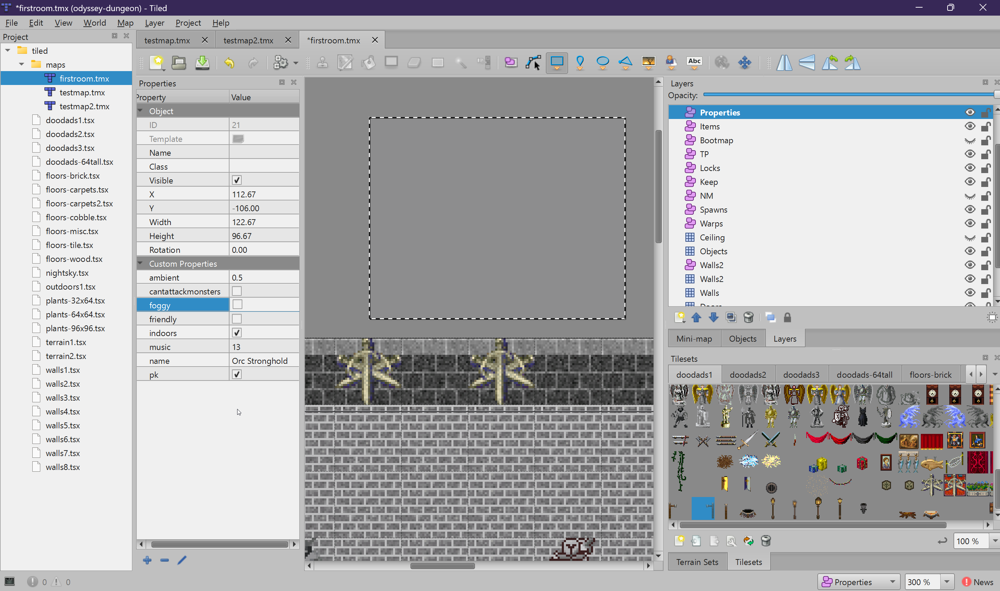

Map Properties
Configure map-wide settings like PvP mode, lighting, and music using the Properties object layer.
The Properties Layer
Map-wide settings are defined through a special object layer called Properties.
This is not the same as Tiled's built-in "Map Properties" — it is a custom
object layer that the Odyssey engine reads at load time.
How to Set Up
- Create a new Object Layer named exactly
Properties - Draw a single rectangle object anywhere on the map (its position and size do not matter)
- Select the rectangle and add custom properties in the Properties panel

Property Reference
| Property | Type | Default | Description |
|---|---|---|---|
name |
string | (map filename) | The display name shown to players. If not set, the map filename is used. Example: Orc Stronghold |
indoors |
bool | false |
Marks the map as indoor. Indoor maps have no sky rendering and use a different default ambient light level. |
pk |
bool | false |
Enables free-for-all player-vs-player combat. All players can attack each other. |
friendly |
bool | false |
Disables all PvP combat. Players cannot attack each other regardless of guild membership. |
cantattackmonsters |
bool | false |
Prevents players from attacking monsters on this map. Useful for peaceful town areas with cosmetic creatures. |
ambient |
float | -1 |
Overrides the ambient light level. 0.0 = pitch black, 1.0 = fully bright. -1 uses the engine default. |
foggy |
bool | false |
Enables a fog effect on the map, reducing visibility at distance. |
music |
int | -1 |
Background music track number (1–20). -1 = no music. |
PvP Combat Modes
The combination of pk and friendly determines the map's combat rules.
There are three distinct modes:
Default Mode
Guild combat mode. Players who belong to different guilds can attack each other. Unguilded players cannot be attacked and cannot attack others. This is the standard mode for most of the game world.
PK Mode
Free-for-all PvP. All players can attack each other regardless of guild membership. Killing another player in PK mode may flag the killer as a murderer, which has in-game consequences (guards will attack on sight, name appears red to other players).
Friendly Mode
No PvP at all. Players cannot attack each other under any circumstances.
Use this for safe towns, social areas, or tutorial zones. The friendly flag
overrides pk if both are set to true.
Lighting Settings
The indoors and ambient properties work together to control how
the map is lit:
-
Outdoor maps (
indoors = false): The map uses the game's day/night cycle for ambient lighting. Theambientproperty is ignored. -
Indoor maps (
indoors = true): No sky is rendered. Theambientproperty controls the base light level. Set it to0for a dark dungeon (relying on point lights and torches), or higher for a well-lit interior.
Example: TMX Markup
Here is what a Properties layer looks like in the raw TMX file:
<objectgroup id="10" name="Properties">
<object id="13" x="0" y="0" width="32" height="32">
<properties>
<property name="name" value="Orc Stronghold"/>
<property name="indoors" type="bool" value="true"/>
<property name="ambient" type="float" value="0"/>
<property name="friendly" type="bool" value="true"/>
<property name="cantattackmonsters" type="bool" value="true"/>
<property name="music" type="int" value="3"/>
</properties>
</object>
</objectgroup>
You do not need to edit the XML directly — Tiled handles this when you set properties through the GUI. This is shown here for reference.